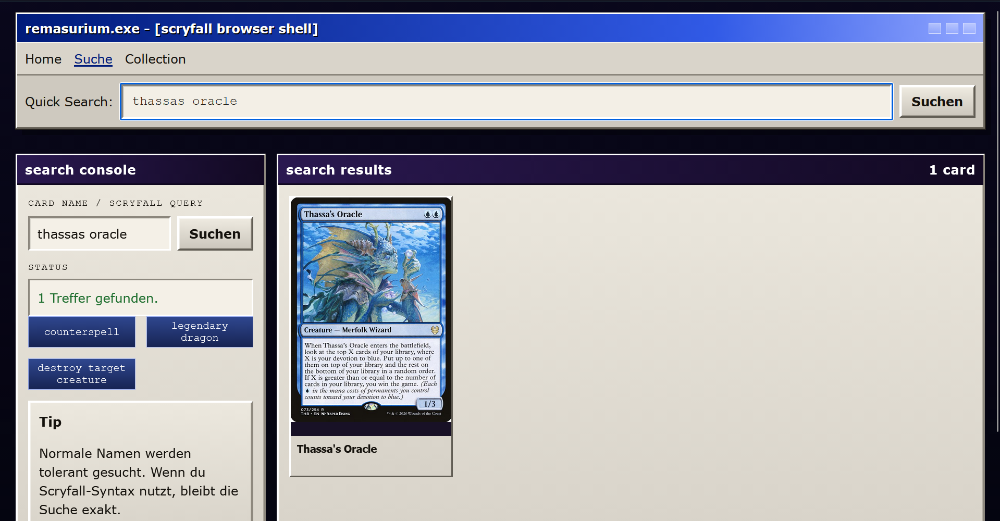
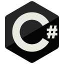

Keine unnötige Komplexität
Ich bevorzuge Lösungen, die man erklären, warten und weiterbauen kann.
Portfolio / 2026
Informatiker Applikationsentwickler in Ausbildung an der IMS Aarau. Fokus auf Webentwicklung, APIs, Automatisierung und Interfaces, die nicht beliebig wirken.
Profil
Ich bin Tim und mache aktuell die Ausbildung an der IMS Aarau. Mich interessiert Software, die nicht nur läuft, sondern nachvollziehbar aufgebaut ist. Am liebsten arbeite ich an kleinen, echten Tools: mit Daten, APIs, klarer Struktur und einem Interface, das den Nutzer ernst nimmt.
Ich bevorzuge Lösungen, die man erklären, warten und weiterbauen kann.
Frontend ist für mich Gestaltung und Struktur gleichzeitig.
Ich baue lieber konkret, teste früh und verbessere sichtbar.
Projekte
001
Dieses Projekt haben wir im Rahmen des Baden Hackt Hackathon 2026 erstellt: eine Software, die mit einem eigenen KI-Modell Gegenstände erkennt, Bestände überwacht und bei zu wenigen Artikeln automatisch eine Nachbestellung per Mail vorbereitet.
002
Ein Magic: The Gathering-Kartenfinder mit Scryfall API, Oracle-Text, Versionshistorie und lokaler Collection. Das Projekt verbindet Kartendaten, Suchlogik und ein bewusst reduziertes Interface.

003
Ein PowerShell-Skript, das Dateien anhand ihres Namens erkennt und in eine sauberere Struktur einsortiert. Kleiner Umfang, klarer Nutzen.
Erfahrung
Kleine Webapps, Automatisierungsskripte und Experimente mit APIs, um Unterricht praktisch zu vertiefen.
Ferienjobs bei Unifil AG, Niederlenz
Ausbildung mit Schwerpunkt auf Applikationsentwicklung, Datenbanken und Webtechnologien.
Semantische Struktur für Portfolio und App-Oberflächen.
Responsive Layouts, klare Kontraste und eigene UI-Systeme.
Suchlogik, UI-Zustände, Kamera-Frontend und API-Calls.
Backend, Trainingsskripte und Logik für KI-gestützte Abläufe.
Objekterkennung und Klassifikation mit eigenem Modell.

Backend-Logik, API-Anbindung und strukturierte Anwendungen.
Scryfall, eigene Backend-Endpunkte und ERP/Webhook-Anbindung.
Dateien sortieren und kleine wiederholbare Aufgaben automatisieren.